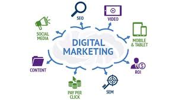

Digital Marketing
What is Digital marketing?
Digital marketing encompasses all marketing effort using electronic devices or the internet. it is a online marketing like search marcketing,email marketing,email marketing media. The term marketing is not just about prom oting and advertisinbg,it is a complex concepty whwre we sebd across the right message to the right person via the right medium. it is a promoting,product,service via digital channels such as social media,email,search engines websit6es to reach tragetr audience,buils brands awareness and drive sales. We need some stuff for digital marketing such as. DIGITAL MARKETING:-There are various type of devies so that our audience including mobile phones dekstop,tablets. DIGITAL PLATFORM:-Most interaction on digital devices is through browser or applicatin from the major platform like google, facebook,instragram,youtube,twitter,linkedin. There are various type of channels in digital marketing such as
types of digital marketing channels
Marketing channels in Digital Marketing. There are various type of channels in digital marketing such as:-
SEO(Search engine optimization):-
Seo is the process of optimization content,technical setup and reach of our website so that our page appear the ultimate goal is to attract visitors to our website when search for product or service realated to our business.
ON PAGE SEO:-
On page SEO including some content.
- Keyword Research and Optimization
- content creation(quality,length,structure)
- meta tags(title,description,Keyword)Header/heading tag(h1,h2,h3)
- Image optimization
- Mobole friendliness
- Page speed optimization
- XML sitemaps
OFF PAGE SEO:-
off page SEO invloves optimization external factors to improve search engine ranking it including some key off page SEO.
- Link buiding
- Social media marketing
- content marketing
- Local SEO
- Guest blogging
- Review management
- Social bookmarking
CONTENT MARKETING:-
Content marketing is strategic marketing approach focused on creatimng and distributing valuble, relevent and consistent content to attract and retain a clearly defined audience and drive profitable customer action.
TYPES OF CONTENT MARKETING:-
BENIFITSBlog post:-
A blog is an acticle or written piece published on a website or blog. So that user can understand essily the content.
Featuring of blog post:-- Informative content
- Personal opinions
- Stories
- Reviews
Videos:-
With using videos to improve search engine ranking and deive traffic.
Benifits of videos- Increased engagement
- Improved
- Increased visiblity
Social Media post:-
A social media post piece of content that is shared on a social media platform. Post can be a mix of text, image, videos, links and audio files.
Some type of social media post include:-- E-book:- E-book is a digital book that is used to generate leads, share knowledge and establish an organization as an authority in its indrsty.
- Infographics:- Infographics is a visual representation of information that used chats,graphs,diagrams,maps and picture to communicate a message quickly.
- Free of cost
- Data Collection is automatic
- Easy customization of result
- Help measure internal site search
- Help us with targeting the right platform.
Webinar marketing:-
Webinar marketing is a cost effective way to use online events to educate an audience about a product or service and to generate leads and conversions . An online seminar or presentation ,typically live or pre-recorded, broadcast to remote audience through web confrecing software.
TYPES OF WEBINAR:-
PPC:-
PPC stands for(pay-per-click) which is a type of online advertising where advertisers pay a fee each time a user clicks on their ad it is way to rank a website in search engine.How PPC works?
PPC (pay-per-click) help drive traffic to our website very fast.
What are the Benifits of PPC?
PPC (pay-per-click) help drive traffic to aur website very fast when PPC is working property the amount is trivial because the click is warth more then what we user pay for it.
Mobile Marketing:-
Mobile devices are come in this modele it is vital for marketing to understand how to communicate on the channels effectivly. There are many way to communicate with our users.Such as mobile apps with SMS.
Google Analytics:-
Google analytics is a free service that measures and it is most important for website. It works by adding a tracking code to each page of a website and collecting imformation about how user interact with the side.
How does google analytic work ?
The main goal of google analytic purpose is to trak our website using and we need add a shippet of javascript code to our websites puges when a user visite a page with this code shippet the uses a javascript file to start tracking data and sends it google analytics.Once google analytics has collected data from our website, the data will populate the report with google Analytics.

Why we need google analytics ?
Search engine:-
Seach engin are the software program that provide information according to the user query it finds various website or web pages that are available on the internet and gived related resul according to the search.